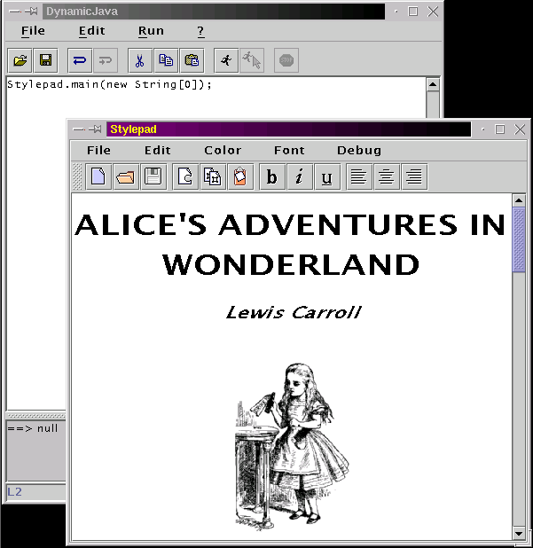
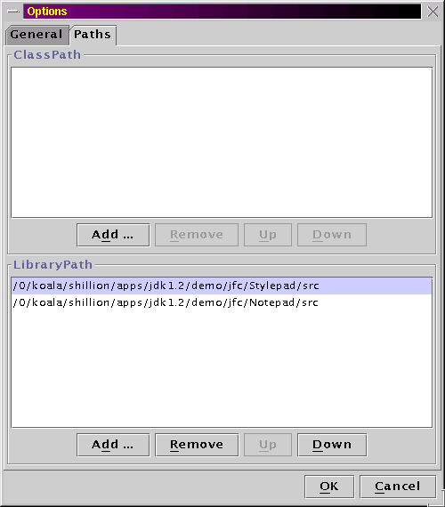
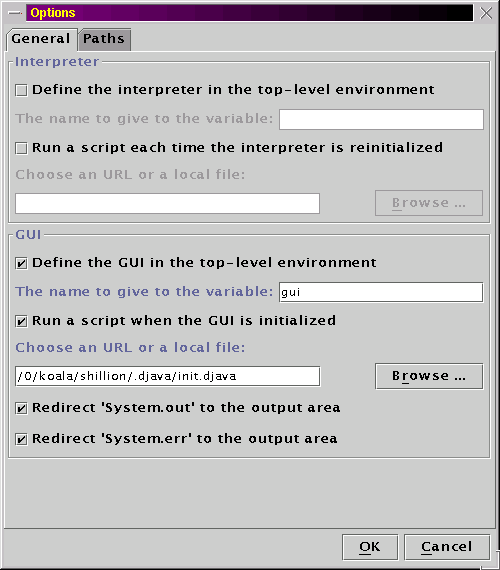

The GUI components
The DynamicJava GUI is a simple Swing editor with the capability to interpret the content of its buffer.
The following screenshot shows DynamicJava interpreting the Stylepad example from the JDK 1.2 distribution. Note the text in the editor buffer:
Stylepad.main(new String[0]);
The Stylepad demo requires a property file and some icons, so the GUI was started from the directory where the 'resources' directory is located.
The demo is composed of four files (Stylepad.java, Notepad.java, Wonderland.java and ElementTreePanel.java). To allow the interpreter to find these files, the directories containing the source files must be added to the library path.
The next screenshot shows the paths dialog:
The first list must contain the URLs or paths to class files. Like in the standard classpath, both directories and jar files can be referred.
The second list must contain paths to directories where the source files are placed.
The order of the paths in the lists is important: the search is done from top to bottom. It is possible to modify this order with the 'up' and 'down' buttons.Some other options are available:

Each time the interpreter is initialized (from the menu or on application startup), the options are applied in the following order:
- The classpath and the library path are notified to the interpreter,
- the interpreter and the gui are defined in the top-level environment if the checkboxes are checked,
- the interpreter initialization script is executed if the checkbox is checked,
- the GUI initialization script is executed if the checkbox is checked and if the GUI has just been launched.
All the options are automatically saved in a '.djava' directory. This directory is created in the directory returned by the JavaTM expression:
System.getProperty("user.home").Customization
The GUI can easily be customized from the GUI initialization script.
For example the following script changes the look and feel of the interface, sets a new size to the main frame and modify the divider location (initgui.djava):import javax.swing.*; // Set the look and feel of the application UIManager.setLookAndFeel("com.sun.java.swing.plaf.motif.MotifLookAndFeel"); SwingUtilities.updateComponentTreeUI(gui); SwingUtilities.updateComponentTreeUI(gui.getOptionsDialog()); // Set the size of the main frame and set the divider location gui.setSize(600, 600); ((JSplitPane)gui.getContentPane().getComponents()[1]).setDividerLocation(380);To execute this script you must define the GUI in the environment (from the options) in the variable named 'gui'.